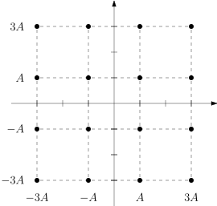

komm.QAModulation¶
- class QAModulation(orders, base_amplitudes=1.0, phase_offset=0.0, labeling='reflected_2d')[source]¶
Quadrature-amplitude modulation (QAM). It is a complex modulation scheme (
ComplexModulation) in which the constellation \(\mathcal{S}\) is given as a Cartesian product of two PAM (PAModulation) constellations, namely, the in-phase constellation, and the quadrature constellation. More precisely,\[\mathcal{S} = \{ [\pm(2i_\mathrm{I} + 1)A_\mathrm{I} \pm \mathrm{j}(2i_\mathrm{Q} + 1)A_\mathrm{Q}] \exp(\mathrm{j}\phi) : i_\mathrm{I} \in [0 : M_\mathrm{I}), i_\mathrm{Q} \in [0 : M_\mathrm{Q}) \},\]where \(M_\mathrm{I}\) and \(M_\mathrm{Q}\) are the orders (powers of \(2\)), and \(A_\mathrm{I}\) and \(A_\mathrm{Q}\) are the base amplitudes of the in-phase and quadrature constellations, respectively. Also, \(\phi\) is the phase offset. The size of the resulting complex-valued constellation is \(M = M_\mathrm{I} M_\mathrm{Q}\), a power of \(2\). The QAM constellation is depicted below for \((M_\mathrm{I}, M_\mathrm{Q}) = (4, 4)\) with \(A_\mathrm{I} = A_\mathrm{Q} = A\), and for \((M_\mathrm{I}, M_\mathrm{Q}) = (4, 2)\) with \(A_\mathrm{I} = A\) and \(A_\mathrm{Q} = 2A\); in both cases, \(\phi = 0\).


Properties
The number \(m\) of bits per symbol of the modulation.
The signal-to-noise ratio \(\mathrm{SNR}\) of the channel.
The constellation \(\mathcal{S}\) of the modulation.
The average bit energy \(E_\mathrm{b}\) of the constellation.
The average symbol energy \(E_\mathrm{s}\) of the constellation.
The binary labeling \(\mathcal{Q}\) of the modulation.
The minimum euclidean distance of the constellation.
The order \(M\) of the modulation.
Methods
__init__(orders[, base_amplitudes, ...])Constructor for the class.
bits_to_symbols(bits)Converts bits to symbols using the modulation binary labeling.
demodulate(received[, decision_method])Demodulates a sequence of received points to a sequence of bits.
modulate(bits)Modulates a sequence of bits to its corresponding constellation points.
symbols_to_bits(symbols)Converts symbols to bits using the modulation binary labeling.
Documentation
- __init__(orders, base_amplitudes=1.0, phase_offset=0.0, labeling='reflected_2d')[source]¶
Constructor for the class.
- Parameters:
orders (
(int, int)orint) – A tuple \((M_\mathrm{I}, M_\mathrm{Q})\) with the orders of the in-phase and quadrature constellations, respectively; both \(M_\mathrm{I}\) and \(M_\mathrm{Q}\) must be powers of \(2\). If specified as a single integer \(M\), then it is assumed that \(M_\mathrm{I} = M_\mathrm{Q} = \sqrt{M}\); in this case, \(M\) must be an square power of \(2\).base_amplitudes (
(float, float)orfloat, optional) – A tuple \((A_\mathrm{I}, A_\mathrm{Q})\) with the base amplitudes of the in-phase and quadrature constellations, respectively. If specified as a single float \(A\), then it is assumed that \(A_\mathrm{I} = A_\mathrm{Q} = A\). The default value is \(1.0\).phase_offset (
float, optional) – The phase offset \(\phi\) of the constellation. The default value is0.0.labeling ((1D-array of
int) orstr, optional) – The binary labeling \(\mathcal{Q}\) of the modulation. Can be specified either as a 1D-array of integers, in which case must be permutation of \([0 : M)\), or as a string, in which case must be one of'natural'or'reflected_2d'. The default value is'reflected_2d'(Gray code).
Examples
>>> qam = komm.QAModulation(16) >>> qam.constellation array([-3.-3.j, -1.-3.j, 1.-3.j, 3.-3.j, -3.-1.j, -1.-1.j, 1.-1.j, 3.-1.j, -3.+1.j, -1.+1.j, 1.+1.j, 3.+1.j, -3.+3.j, -1.+3.j, 1.+3.j, 3.+3.j]) >>> qam.labeling array([ 0, 1, 3, 2, 4, 5, 7, 6, 12, 13, 15, 14, 8, 9, 11, 10]) >>> qam.modulate([0, 0, 1, 1, 0, 0, 1, 0]) array([-3.+1.j, -3.-1.j])
>>> qam = komm.QAModulation(orders=(4, 2), base_amplitudes=(1.0, 2.0)) >>> qam.constellation array([-3.-2.j, -1.-2.j, 1.-2.j, 3.-2.j, -3.+2.j, -1.+2.j, 1.+2.j, 3.+2.j]) >>> qam.labeling array([0, 1, 3, 2, 4, 5, 7, 6]) >>> qam.modulate([0, 0, 1, 1, 0, 0, 1, 0, 1]) array([-3.+2.j, -1.-2.j, -1.+2.j])
- property bits_per_symbol¶
The number \(m\) of bits per symbol of the modulation. It is given by \(m = \log_2 M\), where \(M\) is the order of the modulation. This property is read-only.
- bits_to_symbols(bits)¶
Converts bits to symbols using the modulation binary labeling.
- Parameters:
bits (1D-array of
int) – The bits to be converted. It should be a 1D-array of integers in the set \(\{ 0, 1 \}\). Its length must be a multiple of \(m\).- Returns:
symbols (1D-array of
int) – The symbols corresponding tobits. It is a 1D-array of integers in the set \([0 : M)\). Its length is equal to the length ofbitsdivided by \(m\).
- property channel_snr¶
The signal-to-noise ratio \(\mathrm{SNR}\) of the channel. This is used in soft-decision methods. This is a read-and-write property.
- property constellation¶
The constellation \(\mathcal{S}\) of the modulation. This property is read-only.
- demodulate(received, decision_method='hard')¶
Demodulates a sequence of received points to a sequence of bits.
- property energy_per_bit¶
The average bit energy \(E_\mathrm{b}\) of the constellation. It assumes equiprobable symbols. It is given by \(E_\mathrm{b} = E_\mathrm{s} / m\), where \(E_\mathrm{s}\) is the average symbol energy, and \(m\) is the number of bits per symbol of the modulation.
- property energy_per_symbol¶
The average symbol energy \(E_\mathrm{s}\) of the constellation. It assumes equiprobable symbols. It is given by
\[E_\mathrm{s} = \frac{1}{M} \sum_{s_i \in \mathcal{S}} |s_i|^2,\]where \(|s_i|^2\) is the energy of symbol \(s_i \in \mathcal{S}\) and \(M\) is the order of the modulation. This property is read-only.
- property labeling¶
The binary labeling \(\mathcal{Q}\) of the modulation. This property is read-only.
- property minimum_distance¶
The minimum euclidean distance of the constellation.
- modulate(bits)¶
Modulates a sequence of bits to its corresponding constellation points.
- property order¶
The order \(M\) of the modulation. This property is read-only.
- symbols_to_bits(symbols)¶
Converts symbols to bits using the modulation binary labeling.
- Parameters:
symbols (1D-array of
int) – The symbols to be converted. It should be a 1D-array of integers in the set \([0 : M)\). It may be of any length.- Returns:
bits (1D-array of
int) – The bits corresponding tosymbols. It is a 1D-array of integers in the set \(\{ 0, 1 \}\). Its length is equal to the length ofsymbolsmultiplied by \(m = \log_2 M\).